In January 2000 a tailings dam at a gold mine near Baia Mare, Romania, failed. About 100 000 m³ of cyanide-laden water entered the rivers and travelled down the Someș, the Tisza and the Danube. Fish died along hundreds of kilometres.
Downstream, the measured cyanide concentration fell. Was the poison destroyed, or only spread out?
Today you will learn to:
tell concentration apart from amount and load;
draw a boundary and write a balance;
separate mixing, transfer and reaction;
estimate a timescale from volume and flow.
This is the first lecture of the course. Every later unit uses these tools.
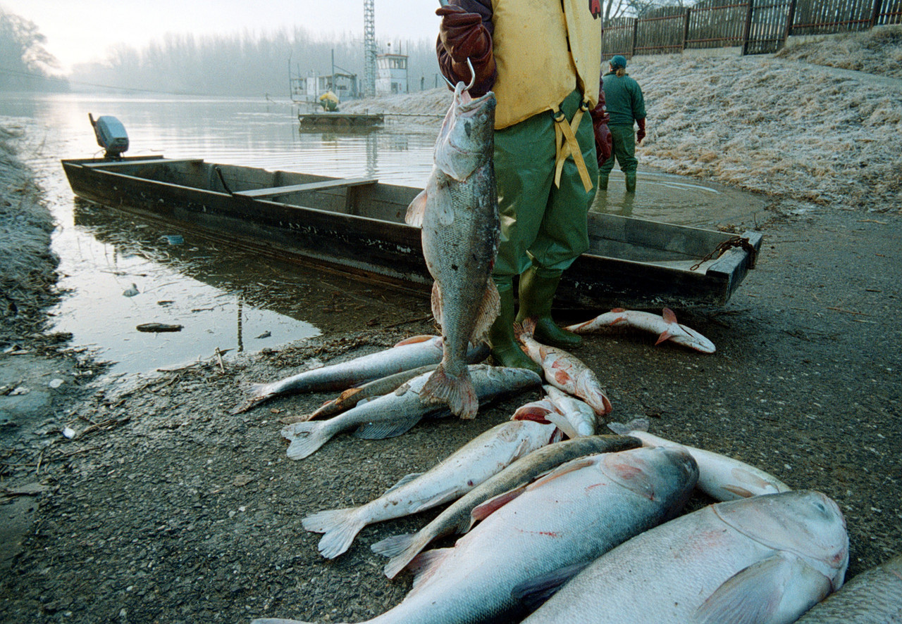
Dead fish collected on the Tisza after the 2000 cyanide spill, Hungary. Photo: Délmagyarország/Karnok Csaba, CC BY-SA 3.0, Wikimedia Commons.
A concentration falls downstream. Why?
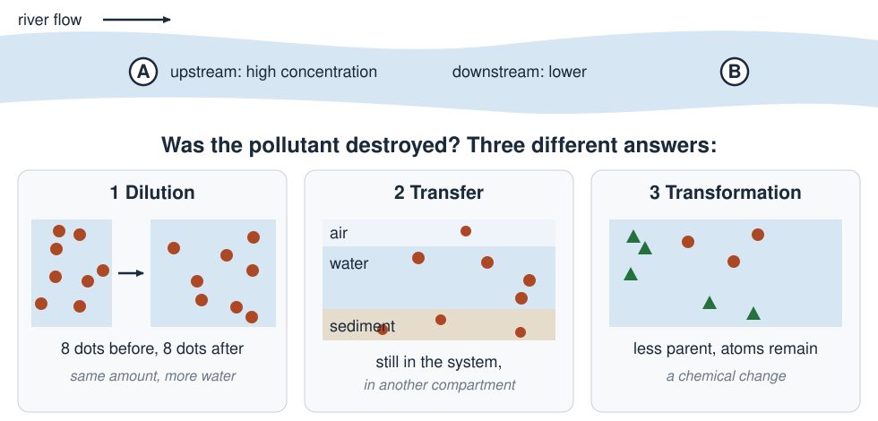
A lower number at station B has at least three explanations. Water joined the river (dilution). The substance moved into sediment or air (transfer). Or it reacted to something else (transformation). Only the third is chemical destruction, and even then the atoms remain.
Concentration is not amount
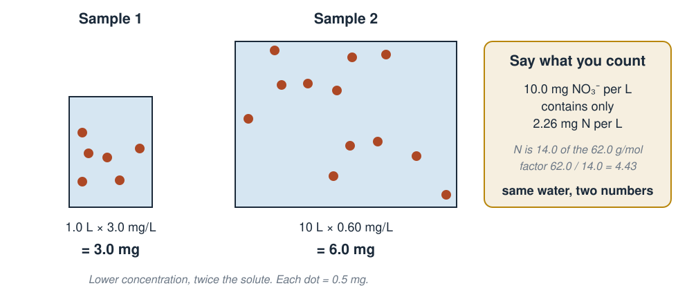
Amount = concentration × volume. A dilute large sample can hold more solute than a concentrated small one. Also state what you count: mg of nitrate and mg of nitrogen are different numbers for the same water.
Load: amount carried per time
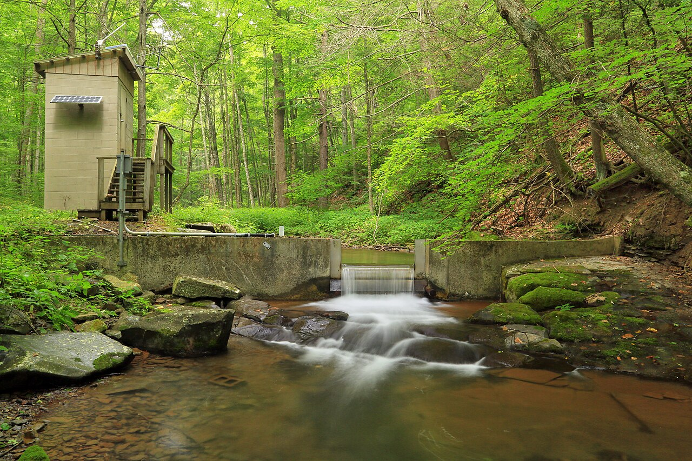
A US Geological Survey streamgage that records river flow. Photo: U.S. Geological Survey, public domain, Wikimedia Commons.
A river does not hold a fixed amount; it carries one. The rate is the load:
\text{load} = Q \times C
Worked example. A stream carries Q = 0.200 m³/s at C = 0.500 mg/L.
A load needs both a concentration and a flow measurement.
Choose the boundary first
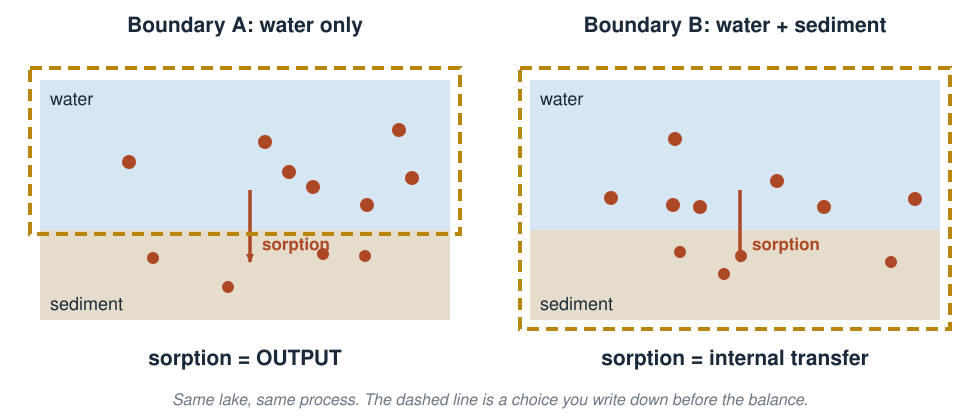
A compartment is a volume you define: a lake, a sample bottle, or water plus sediment. A flux crosses the boundary. A reaction happens inside it. Sorption to sediment is an output from the water, but only an internal move for the lake as a whole.
Write the balance
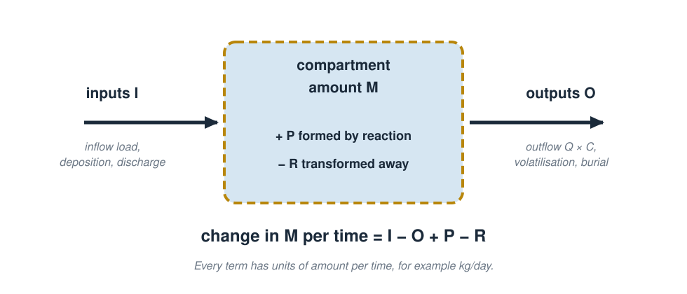
For a well-mixed water body of constant volume, the outflow term is Q × C: outflow water times the outlet concentration. Inflow and outflow water must also balance if the volume stays fixed.
Transfer or transformation?
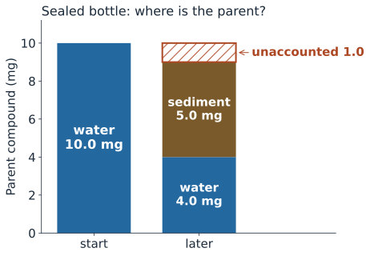
A sealed bottle starts with 10.0 mg of a parent compound in water. Later the water holds 4.0 mg and the sediment 5.0 mg.
Water alone: 6.0 mg “lost”.
Water + sediment: only 1.0 mg missing.
The missing 1.0 mg may be transformation, loss to the bottle wall, or analytical error. The balance tells you how much to explain, not what happened to it.
Steady state does not mean nothing happens
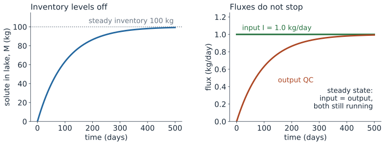
A constructed lake (V = 10⁶ m³, Q = 10⁴ m³/day) receives 1.0 kg/day of a conservative solute. The inventory rises and levels off when output = input. At steady state the amount stops changing, but both fluxes keep running.
Mixing without reaction
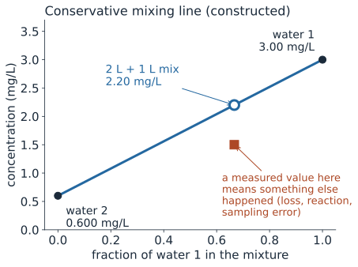
Mix 2.00 L at 3.00 mg/L with 1.00 L at 0.600 mg/L.
amounts: 6.00 mg + 0.600 mg = 6.60 mg
volume: 3.00 L
concentration: 6.60 / 3.00 = 2.20 mg/L
Add amounts, then divide by total volume. Never average concentrations.
All conservative mixtures of two waters fall on a straight mixing line. A point off the line needs another explanation.
Rivers mix by load
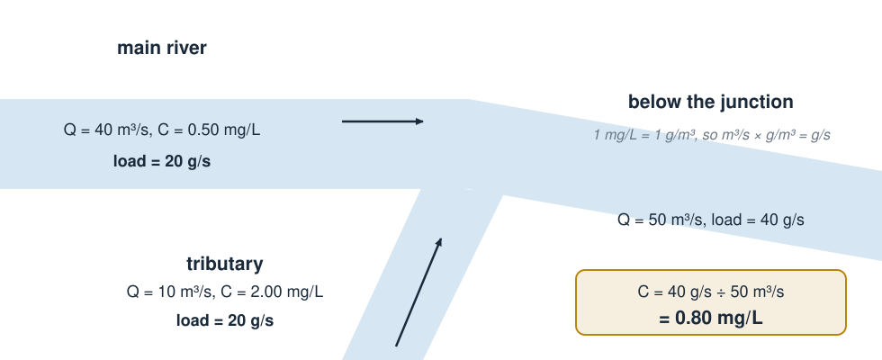
At a junction, add loads, then divide by total flow. The tributary is four times more concentrated, yet the mixed river is only 0.80 mg/L. Nothing reacted; the solute was diluted.
Check yourself
Mix 4.00 L at 2.00 mg/L with 1.00 L of clean water. What is the final concentration? Was solute destroyed?
A lake is at steady state. Does that mean no pollutant enters it?
A report says “60% of the pesticide was removed from the pond water within a week.” What would you ask before calling it degradation?
Is 5 mg NO₃⁻/L more or less nitrogen than 5 mg N/L?
How long does the water stay?
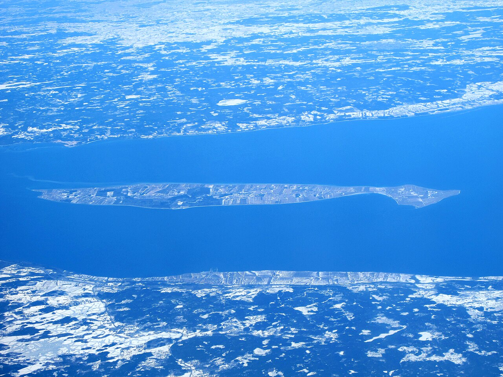
Lake Vättern with the island of Visingsö, Sweden, from the air. Photo: acediscovery, CC BY 4.0, Wikimedia Commons.
The hydraulic replacement time is
\tau = V / Q
Lake Vättern, Sweden’s second-largest lake: V ≈ 77 km³, outflow Q ≈ 40 m³/s.
τ ≈ 77 × 10⁹ m³ ÷ 40 m³/s ≈ 1.9 × 10⁹ s ≈ 60 years.
A conservative pollutant that enters Vättern today can stay for decades. A small forest pond may be replaced in days.
Flushing and reaction act together
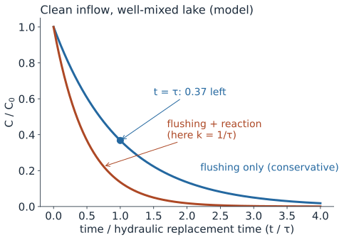
Clean water flushes a well-mixed lake: a conservative solute falls as C = C_0e^{-t/\tau}. After one τ about 37% remains, not zero. A solute that also reacts with rate constant k disappears faster: the two loss rates add, 1/τ + k.
Back to the Tisza: a pulse moving downstream
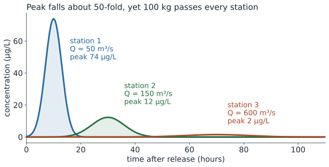
A constructed 100 kg pulse of a conservative tracer. As tributaries join, flow rises and the pulse spreads out. The peak falls about 50-fold, yet the area under each curve times Q gives 100 kg at every station.
Closing the balance in the field
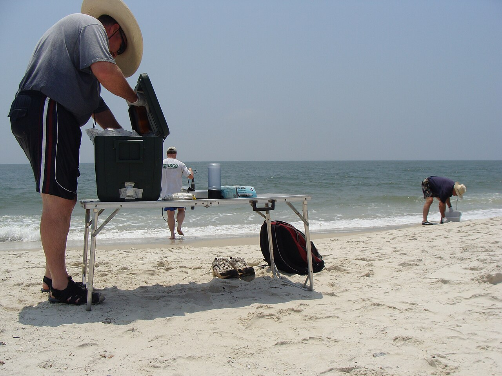
USGS team taking baseline water and sediment samples at Gulf Shores, Alabama, before oil from the 2010 Deepwater Horizon spill arrived. Photo: U.S. Geological Survey, public domain, Wikimedia Commons.
A lake’s concentration falls while its volume rises. To tell dilution, export and transformation apart, measure over the same period:
volume and total inventory in the water;
inflow and outflow loads;
amounts in sediment, biota or air;
likely transformation products.
A concentration time series alone cannot close the balance.
Common mistakes to avoid
“The concentration fell, so the pollutant was destroyed.” Check dilution and transfer first.
“Average the concentrations.” Add amounts or loads; then divide by total volume or flow.
“Steady state means no input.” It means input and output balance.
“τ = V/Q is how long every molecule stays.” It is a replacement scale for the water, not a chemical lifetime.
“Removed from the water” = “gone.” Name the boundary; sorption may be internal transfer.
“mg/L nitrate equals mg/L N.” State the basis; they differ by a factor of about 4.4.
Summary
Concept
Key fact
Amount
concentration × volume; state the basis (mg N or mg NO₃⁻)
Load
flow × concentration; 1 mg/L = 1 g/m³
Boundary
decides whether a process is an output or an internal transfer
Balance
change in M per time = I − O + P − R; same units in every term
Steady state
accumulation zero; fluxes still run
Mixing
add amounts or loads, then divide; points off the mixing line need explaining
Timescale
τ = V/Q; about 37% of a conservative solute left after one τ
Losses add
flushing (1/τ) and reaction (k) combine
Opening case
falling concentration downstream: mostly dilution unless the load also falls